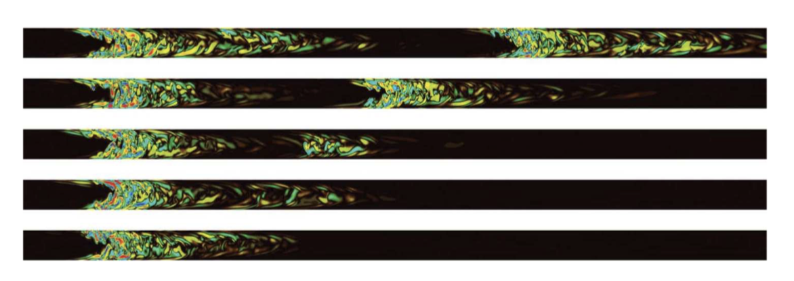

Internal flow fundamentals
Feeling good deriving the basics, continue to review the following content.
1 Flow regimes — case study of duct flow
1.1 Examples of duct flows
1.1.1 Oil extraction
Upon finding a natural oil reservoir, several techniques are employed to extract the oil.
- Drilling a long hole into the Earth and placing a duct in, the oil reservoir possesses a higher pressure then the atmosphere thus the oil is pushed upwards along the duct.
- Steam injection, drilling a second hole to inject steam, the addition of steam increase the pressure and push the oil further upwards. The increase in temperature reduces the viscosity.
1.1.2 Pipeline transport
Transport systems designed to bring the oil to storage or treatment sites face many challenges. Take Trans-Alaska Pipeline System (TAPS) as an example, oil extracted is substantially warmer than anything at the surface, the permafrost (frozen ground) may warm up and become unstable. To avoid this , radiators have beed placed next to the pipeline.
Besides, drag-reducing agents DRA are mixed with the oil to reduce the viscous drag produced by the massive turbulent flow inside.
1.1.3 Biological flow
The cerebral blood flow in the cortex can be modelled through a complex assembly of ducts, mimicking the vessel network present in the brain. Experimental data coupled with numerical simulations can then provide prediction of the pressure map in the brain.Access to these results can then be used to predict the risks of blockage or damage of the vessels and thus of brain stroke.
1.2 Reynolds number
In 1883, Osbourne Reynolds published his famous pipe flow experiment. He placed a pipe within a tank full of water. The water entered in the pipe through a converging cone to decrease the impact of entrance effects and the flow rate is controled by a valve. Aligned with the entrance of the pipe is a needle connected to a dye container. As the desired flow rate is reached, dye is injected within the pipe to trace out the fluid’s trajectory.

In addition to making these observations, it is possible to characterise these different regimes in a simple manner, the quantities that influence the flow are:
- pipe diameter \(l\): \([l]=L\)
- fluid's velocity \(u\): \([u]=LT^{-1}\)
- fluid's density \(\rho\): \([\rho] = mL^{-3}\)
- fluid's dynamic viscosity \(\mu\): \([\mu]=mL^{-1}T^{-1}\)
Combine these quantities to obtain a dimensionless number called Reynolds number, \[
\color{purple}
Re = \frac{\rho V L}{\mu}
\] 
With Reynolds number, 3 regimes of flow can be defined:
- Laminar flows: \(0<Re<1000\)
- Transitional flows: \(1000<Re<4000\)
- Turbulent flows: \(4000<Re\)

The intermittent bursts of turbulence displayed in the transitional regime are the signature of the passage of turbulent puffs. They can be observed by direct numerical simulation, like the figure above for Re = 2300. The upstream edge of the puff is well-defined, while the downstream edge is elongated and fuzzy. Puffs typically evolve in two different ways: Vanishing and decaying down to the laminar state or splitting, leading to an increasingly large turbulent fraction in the flow. Puffs decay rapidly in the laminar regime and split frequently in the turbulent regime, but they remain long-lived in the transitional one.
The lifetime of a puff before decaying and splitting in pipe flow is studied as a function of Reynolds number, and the results are shown below. It is confirmed that the puffs are long-lived over a wide range of \(Re\)s. Importantly, there is an intersection between the decay and the splitting lifetime curves. This intersection provides a well-defined legitimate threshold between laminar and turbulent flows: \(Re_c≈ 2040\).

1.3 Other considerations
1.3.1 Newtonian/non-Newtonian fluids
Water and air all follow the rule of constant viscosity, that is, the wall shear stress is \(\mu\) proportional to the normal velocity gradient (shear, strain rate): \[ \tau = \mu\partial_nu \] But not all types of fluids follow this law, as seen below.
- Shear thinning: ketchup, becoming less and less viscous as they are stirred.
- Shear thickening: corn starch, getting much harder to strain as they receive more stress.
- Mayonnaise: tooth paste, possessing a threshold stress below which they behave like solids and above which their rheological law is linear. If you hang the open container upside down, it will not flow. An additional force is needed on the container to create a flow.
- More complicated, Herschel–Bulkley fluids (e.g. paint) or even time-dependent visco-elastic fluids (e.g. polymers).

1.3.2 Compressibility
When the flow speed reach the speed of sound, the fluid becomes compressible, meaning the density becomes variant in time and space. The best unidimensional quantity to describe this threshold is called Mach number: \[ Ma = \frac{u}{c} \] where the \(c\) is the speed of sound, and the flowing regimes are observed defined by \(Ma\).
- \(0<Ma<0.3\): incompressible flows.
- \(0.3<Ma<1\): compressible subsonic flows.
- \(1<Ma\): compressible supersonic flows.
2 Laminar flow cases
2.1 Incompressible framework
2.1.1 The Navier-Stokes equation
The incompressible Navier–Stokes equation describes the motion of fluids under external forces. It writes: \[ \color{purple} \frac{\partial \mathbf{V}}{\partial t}+\mathbf{V}\cdot\boldsymbol{\nabla} \mathbf{V} = \mathbf{f} -\frac{1}{\rho}\boldsymbol{\nabla} p + \nu\boldsymbol{\nabla}^2\mathbf{V} \]
The left-hand-side of the Navier–Stokes equation represents inertia. It involves the rate of change of the velocity with time ∂tu as well as advection (u · ∇) u. The latter term quantifies how the fluid is transported by the flow velocity. In an equation such as the heat equation, this term applies to the temperature T, reads (u · ∇) T and quantifies how temperature is transported by the flow velocity.
The right-hand-side represents all the forces acting on the fluid. In addition to the external forces f that we will not take into account in this Chapter, the other terms come from the divergence of the stress tensor. They include the pressure gradient −∇p that translates the fact that the fluid is attracted to low pressure regions and the viscous force μ∇2u quantifying the internal friction between in the fluid.
2.1.2 Continuity equation
Recall the mass conservation equation in the Eulerian frame of reference, \[ \frac{\partial\rho}{\partial t} + \boldsymbol{\nabla}\cdot(\rho\mathbf{V})=0 \] And with the incompressibility consumption, \[ \color{purple} \boldsymbol{\nabla}\cdot\mathbf{V} = 0 \]
2.1.2 Additional hypotheses
In the laminar flow regime, it is common to assume the flow as:
- steady: \(\partial_t=0\)
- unidirectional: the flow is parallel the to walls
- symmetry: the flow is further simplified using the symmetries of the geometry
2.2 Pipe flow
2.2.1 Cylindrical coordinate
In cylindrical coordinate, the velocity: \[ \mathbf{V} = u_r\mathbf{\hat {r}}+u_\theta\boldsymbol{\hat {\theta}}+u_z\mathbf{\hat {z}} \] The line element writes: \[ ds = dr\mathbf{\hat{r}} + rd\theta\boldsymbol{\hat{\theta}}+dz\mathbf{\hat{z}} \] The gradient operator： \[ \boldsymbol{\nabla} = \partial_r\mathbf{\hat {r}}+\frac{1}{r}\partial_\theta\boldsymbol{\hat {\theta}}+\partial_z\mathbf{\hat {z}} \] And the directions change with \(\theta\), as a consequence: \[ \partial_\theta\mathbf{\hat{r}} = \boldsymbol{\hat {\theta}}, \qquad \partial_\theta\boldsymbol{\hat {\theta}} = -\mathbf{\hat{r}} \] Some useful equations: $$ \[\begin{aligned} \boldsymbol{\nabla} \cdot \mathbf{V} =& \frac{1}{r}\partial_r(ru_r)+ \frac{1}{r}\partial_\theta(u_\theta) + \partial_z(u_z) \\ (\mathbf{V}\cdot\boldsymbol{\nabla})\mathbf{V} =&\left(u_{r} \partial_{r} u_{r}+\frac{u_{\theta}}{r} \partial_{\theta} u_{r}-\frac{u_{\theta}^{2}}{r}+u_{z} \partial_{z} u_{r}\right) \hat{\mathbf{r}} \\ &+\left(u_{r} \partial_{r} u_{\theta}+\frac{u_{r} u_{\theta}}{r}+\frac{u_{\theta}}{r} \partial_{\theta} u_{\theta}+u_{z} \partial_{z} u_{\theta}\right) \boldsymbol{\hat{\theta}}\\ &+\left(u_{r} \partial_{r} u_{z}+\frac{u_{\theta}}{r} \partial_{\theta} u_{z}+u_{z} \partial_{z} u_{z}\right) \hat{\mathbf{z}}\\ \boldsymbol{\nabla}^2\mathbf{V}=&\left[\frac{1}{r} \partial_{r}\right.\left.\left(r \partial_{r} u_{r}\right)+\frac{1}{r^{2}} \partial_{\theta}^{2} u_{r}-\frac{u_{r}}{r^{2}}-\frac{2}{r^{2}} \partial_{\theta} u_{\theta}+\partial_{z}^{2} u_{r}\right] \hat{\mathbf{r}} \\ &+ {\left[\frac{1}{r} \partial_{r}\left(r \partial_{r} u_{\theta}\right)+\frac{2}{r^{2}} \partial_{\theta} u_{r}+\frac{1}{r^{2}} \partial_{\theta}^{2} u_{\theta}-\frac{u_{\theta}}{r^{2}}+\partial_{z}^{2} u_{\theta}\right] \boldsymbol{\hat{\theta} }} \\ &+ {\left[\frac{1}{r} \partial_{r}\left(r \partial_{r} u_{z}\right)+\frac{1}{r^{2}} \partial_{\theta}^{2} u_{z}+\partial_{z}^{2} u_{z}\right] \hat{\mathbf{z}} } \\ \end{aligned}\]$$
2.2.2 Governing equations
Continuity equation: \[ \frac{1}{r}\partial_r(ru_r)+ \frac{1}{r}\partial_\theta(u_\theta) + \partial_z(u_z) = 0 \] Navier–Stokes equation: \[ \begin{aligned} \rho\left[\partial_{t} u_{r}\right.&\left.+u_{r} \partial_{r} u_{r}+\frac{u_{\theta}}{r} \partial_{\theta} u_{r}-\frac{u_{\theta}^{2}}{r}+u_{z} \partial_{z} u_{r}\right]=-\partial_{r} p \ldots \\ &+\mu\left[\frac{1}{r} \partial_{r}\left(r \partial_{r} u_{r}\right)+\frac{1}{r^{2}} \partial_{\theta}^{2} u_{r}-\frac{u_{r}}{r^{2}}-\frac{2}{r^{2}} \partial_{\theta} u_{\theta}+\partial_{z}^{2} u_{r}\right] \\ \rho\left[\partial_{t} u_{\theta}\right.&\left.+u_{r} \partial_{r} u_{\theta}+\frac{u_{r} u_{\theta}}{r}+\frac{u_{\theta}}{r} \partial_{\theta} u_{\theta}+u_{z} \partial_{z} u_{\theta}\right]=-\frac{1}{r} \partial_{\theta} p \ldots \\ &+\mu\left[\frac{1}{r} \partial_{r}\left(r \partial_{r} u_{\theta}\right)+\frac{2}{r^{2}} \partial_{\theta} u_{r}+\frac{1}{r^{2}} \partial_{\theta}^{2} u_{\theta}-\frac{u_{\theta}}{r^{2}}+\partial_{z}^{2} u_{\theta}\right] \\ \rho\left[\partial_{t} u_{z}\right.&\left.+u_{r} \partial_{r} u_{z}+\frac{u_{\theta}}{r} \partial_{\theta} u_{z}+u_{z} \partial_{z} u_{z}\right]=-\partial_{z} p \ldots \\ &+\mu\left[\frac{1}{r} \partial_{r}\left(r \partial_{r} u_{z}\right)+\frac{1}{r^{2}} \partial_{\theta}^{2} u_{z}+\partial_{z}^{2} u_{z}\right] \end{aligned} \]
2.2.3 Solution
Boundary conditions, no-slip walls: \[ \mathbf{V}|_{r=R} = \mathbf{0} \] Further assumptions:
- no radial motion: \(u_r = 0\)
- no spiralling motion: \(u_\theta = 0\)
- axisymmetric flow: \(\partial_\theta\mathbf{V}=0\)
As a result, the velocity becomes unidirectional and not vary with \(\theta\): \[
\mathbf{V} = u_z(r,z)\mathbf{\hat{z}}
\] Then the Navier–Stokes equations is reduced to: \[
\begin{aligned}
\partial_zu_z&=0 \\
\partial_rp &= \partial_\theta p = 0
\end{aligned}
\] Together with above hypotheses the governing equation become: \[
\begin{aligned}
\mathbf{V}=u_z{r}\mathbf{\hat{z}} \\
p = p(z)
\end{aligned}
\] Lastly, the Navier-Stokes equation in the streamwise direction reduces to: \[
0 = -\partial_zp+\frac{\mu}{r}\partial_r(r\partial_ru_z)
\] Note that the derivation of the equation above w.r.t. \(z\) leads to \(\partial^2_zp=0~( \partial_zp=Const.)\) The solution of the N-S equation above is: \[
\begin{aligned}
&\frac{\partial}{\partial r}(r\frac{\partial u_z}{\partial r})=r\frac{\partial p}{\mu\partial z} \\
\Rightarrow\quad&
\frac{\partial u_z}{\partial r}=\frac{r}{2}\frac{\partial p}{\mu\partial z}+\frac{k_1}{r}\\
\Rightarrow\quad&
u_z=\frac{r^2}{4}\frac{\partial p}{\mu\partial z}+k_1\ln{r} + k_2
\end{aligned}
\] To avoid the singularity on \(r=0\), \(k_1=0\), and \(k_2\) is determined by the boundary condition: \[
\begin{aligned}
&\mathbf{V}|_{r=R} = \mathbf{0}\\
\Rightarrow\quad
&u_z|_{r=R}=\frac{R^2}{4}\frac{\partial p}{\mu\partial z} + k_2 = 0 \\
\Rightarrow\quad
&k_2 = -\frac{R^2}{4}\frac{\partial p}{\mu\partial z}
\end{aligned}
\] The governing function of laminar pipe flow, also know as Poiseuille flow is therefore a quadratic law: \[
\color{purple}
u_z=\frac{R^2\partial_z p}{4\mu}\left(\frac{r^2}{R^2}-1\right)
\] 
Assumptions:
- Laminar flow
- Incompressible
- Steady
- Homogeneous in \(r\) and \(\theta\) directions
- viscous
2.2.4 Some characteristic quantities
The max velocity is reached at the centre of the pipe: \[ u_z|_{max} = u_z(0) z=-\frac{R^2\partial_z p}{4\mu} \]
The minus sign shows that the flow goes against the pressure gradient, from the high pressure to the low pressure regions.
The average velocity can be calculated as: \[ \begin{aligned} u_z|_{avg} &= \frac{1}{\pi R^2}\int_0^R\left[\frac{R^2\partial_z p}{4\mu}\left(\frac{r^2}{R^2}-1\right)\right]2\pi rdr \\ &= -\frac{R^2\partial_z p}{8\mu} \\ &=\frac12u_z|_{max} \end{aligned} \] The flow rate: \[ \begin{aligned} Q &= A u_z|_{avg} \\ &=-\frac{\pi R^4\partial_z p}{8\mu} \end{aligned} \] If the total pressure drop in the pipe with a length of \(L\) has a value: \[ \Delta p = \partial_zpL \] The flow rate is therefore: \[ Q = -\frac{\pi R^4 \Delta p}{8\mu L} \] And the wall shear stress is: \[ \begin{aligned} \tau_{w} &= \mu \partial_r u_z|_{r = R} \\ &= -\frac{R\Delta p}{2L} \end{aligned} \] Note that \(\tau_w\) can be related with the average velocity, and therefore the flow rate: \[ \tau_w =\frac{4\mu u_z|_{avg}}{R} \]
2.3 Other cases
2.3.1 Non-viscous pipe flow
Inviscid flows are yielded by the Euler function (ignore the body force): \[
\partial_t\mathbf{V}+\mathbf{V}\cdot\boldsymbol{\nabla}\mathbf{V} = -\frac{1}{\rho}\boldsymbol{\nabla} p
\] and the continuity function: \[
\boldsymbol{\nabla}\cdot\mathbf{V} = 0
\] And because of the inviscid condition, the boundary equation at the wall is stated as "free-slip", instead of the "no-slip" condition: \[
u_r|_{r=R}=0\qquad\partial_ru_\theta|_{r=R} = 0\qquad \partial_ru_z|_{r=R}=0
\] The incompressibility constraint simplifies into: \[
\begin{aligned}
&\partial_zu_z=0 \\
\Rightarrow\quad&\partial_z=Const.
\end{aligned}
\] 
Assumptions:
- Laminar flow
- Incompressible
- Steady
- Homogeneous in \(r\) and \(\theta\) directions
- inviscid
The maximum and average values are equal: \[ u_z|_{max} = u_z|_{avg} = u_z \] and the flow rate is: \[ Q = Au_z = \pi R^2u_z \] And there is no friction shear stress at walls.
2.3.2 Channel flow
Channel flow describes a three-dimensional flow confined between two parallel plates and driven similarly to pipe flow by a pressure gradient.

Assumptions:
- Laminar flow
- Incompressible
- Steady
- Homogeneous in \(x\) and \(z\) directions
- viscous
Similar to the Poiseuille flow, yet in the cartesian coordinate, the velocity is defined as: \[ \mathbf{V} = u_x(y)\mathbf{\hat{x}} \] And the N-S equation is reduced to: \[ 0 = -\partial_xp+\mu\partial_y^2u_x \] with the boundary conditions: \[ \mathbf{V}|_{y=\pm h} = \mathbf{0} \] The velocity is therefore: \[ \color{purple} u_x = \frac{\partial_xph^2}{2\mu}\left(\frac{y^2}{h^2}-1\right) \] This is also called plane Poiseuille flow.
2.3.3 Plane Couette flow
Plane Couette flow describes a three-dimensional flow confined between two parallel plates yet driven by sliding walls.

Same assumptions are adopted as the channel flow.
Similar to the channel flow, the velocity governing equation is: \[ 0 = \mu\partial_y^2u_x \] Yet the boundary conditions are changed to be: \[ \begin{aligned} &u_x|_{y=h} = U \\ &u_x|_{y=-h} = -U \end{aligned} \] As the velocity function become: \[ \color{purple} u_x =- \frac{ U}{h}y \]
3 Viscous losses
3.1 Pressure drop
3.1.1 Experimental evidence
In 1839, Hagen studied water flows in long brass pipes and hinted at the possible existence of two different regimes of viscous flows: laminar and turbulent. He characterised, in particular, laminar flows through the following law: \[ \Delta p = k\frac{LQ}{R^4}+\mathrm{entrance~effects} \] where \(k = Const.\), \(L\) is the length of the pipe, \(Q\) the flow rate and \(R\) the radius of the pipe.
As he increased Q beyond a certain threshold, Hagen observed that this law broke down, and deduced the existence of a second regime. This experimental observations are easily reproduced and the results sketched in figure below.

3.1.2 Dimensional analysis
We consider a laminar flow in a horizontal pipe for which density and gravity effects are negligible. The dimensions of related quantities are:
- pressure drop \(\Delta p\): \([\Delta p] = [ML^{-1}T^{-2}]\)
- flow rate \(Q\): \([Q]=[L^3T^-1]\)
- pipe length \(L\): \([L]=[L]\)
- pipe radius \(R\):\([R]=[L]\)
- fluid's dynamic viscosity \(\mu\): \([\mu]=[ML^-1T^-1]\)
As the pressure gradient is constant along the pipe and the flow fully characterised by the radial direction only, we can write \[ \frac{\Delta p}{L}=\mathcal{F}(Q, R, \mu) \] We note that the left-hand-side has dimension proportional to a mass M and that only the dynamic viscosity has dimension proportional to a mass. We can then divide by the dynamic viscosity to get rid of this dimension. \[ \frac{\Delta p}{\mu L}=\mathcal{F}(Q, R) \] Similarly, to get rid of the length dimension, multiply by \(R\). Then divide by \(R^3\). \[ \frac{\Delta p R}{\mu L}=\mathcal{F}(\frac{Q}{R^3}) \] At this stage, both the left-hand-side and the right-hand-side terms are both homogeneous to the inverse of a time. Upon dividing the one by the other, we obtain the following relationship: \[ \frac{\Delta p R^4}{\mu LQ}=Const. \] which provide the following pressure loss drop law: \[ \Delta p = C_{onst.} \mu\frac{ LQ}{ R^4} \] This law is very similar to that obtained experimentally by Hagen. In particular, it shows that Hagen’s constant \(k\) is homogeneous to a dynamic viscosity.
3.1.3 Theoretical answer
Recall the streamwise velocity reads: \[ u_z=\frac{R^2\partial_z p}{4\mu}\left(\frac{r^2}{R^2}-1\right) \] giving the following flow rate: \[ Q = -\frac{\pi R^4\Delta p}{8\mu L} \] And the $p $ as a function of \(Q,R,\mu,L\) reads: \[ \color{purple} \Delta p = \frac{8}{\pi}\mu\frac{LQ}{R^4} \]
3.2 Head loss
3.2.1 The Bernoulli equation
As a result of the friction between the fluid and the wall, the energy and head decrease between these two sections. We take this into account by adding a term to the Bernoulli equation as: \[ \frac{p_1}{\rho g}+\frac{u_1^2}{2g}+z_1 = \frac{p_2}{\rho g}+\frac{u_2^2}{2g}+z_2+h_f \] where \(h_f\) is called head loss and accounts for the viscous dissipation. The equivalent loss of energy per unit volume is \(\rho ghf\). Relevantly, \(\frac{p}{\rho g}\) is called pressure head and \(\frac{u^2}{2g}\) is called kinetic head.
Conditions:
- Steady
- Incompressible
- Streamwise
- Viscous.
3.2.2 Application to pipe flow

Given a inclined laminar pipe. The velocity of the fluid is invariant with the streamwise direction \(x\), so \(u_1= u_2\). We can then express the head loss: \[ h_f = \frac{\Delta p}{\rho g}+\Delta z \] Apply the momentum equation for the control volume shown above: \[ \Sigma F_x = \rho\pi R^2\left(u_{2avg}^2-u_{1avg}^2\right) \] There are three forces acting on the fluid in the x direction：
- pressure: \(\Delta p\pi R^2\)
- weight: \(\rho L \pi R^2 \sin(\phi)g\)
- shear: \(-\tau_w2\pi RL\)
Additionally, with constant fluid velocity i.e. \(u_{1avg} = u_{2avg}\), the momentum equation can be simplified as: \[ \Delta p\pi R^2+\rho L \pi R^2 \sin(\phi)g-\tau_w2\pi RL=0 \] as a result: \[ \frac{\Delta p}{\rho g}+\Delta z = \frac{2\tau_wL}{\rho gR} \] and the head loss therefore writes: \[ \color{purple} h_f = \frac{2\tau_wL}{\rho gR} = \frac{4\tau_wL}{\rho gd} \] Recall the wall shear for the Poiseuille flow, \(\tau_w =\frac{4\mu u_{avg}}{R}\) \[ \color{purple} h_f = \frac{8\mu u_{avg} L}{\rho gR^2} = \frac{32\mu u_{avg} L}{\rho gd^2} \]
3.2.3 Physical interpretation
We can experimentally observe quantities related to the Bernoulli equation. Static pressure tubes directly connected to the side of the pipe directly observe the pressure head \(p/ρg\). When this quantity is summed with the altitude \(z\) and tracked along the pipe, we obtain the hydraulic grade line. The use of Pitot tubes provides additional information: as they are oriented in the direction of the flow, they are sensitive to the fluid’s velocity and include the kinetic head \(u^2/2g\). The line obtained by summing the kinetic head together with the pressure head and the altitude is called energy grade line.
When viscous effects are non-negligible, the head loss can be observed as loss of pressure and therefore as a drop for both lines. This situation is depicted below:

3.2.4 General formulae (Turbulent flow)
The theory above only describes the steady laminar flow, but flows are often turbelent in applications. A need for general expression of head loss arose.
In 1850, Weisbach used physical intuition to lead the way to a unifying theory. He realised that the head loss was proportional to \(L/d\) and also approximately proportional to \(u_{avg}^2\) experimentally for turbulent flows. He then suggested the following relationship: \[ \color{purple} h_f = f\frac{L}{d}\frac{u_{avg}^2}{2g} \] where f is a non-dimensional parameter called Darcy friction factor. Still out of physical intuition, he precised that the friction factor depend on the Reynolds number, the duct shape and the roughness of the wall for turbulent flows.
For laminar flow in a pipe: \[ \begin{aligned} \frac{32 \mu u_{a v g} L}{\rho g d^{2}} &=f_{l a m} \frac{L}{d} \frac{u_{a v g}^{2}}{2 g} \\ \Rightarrow f_{l a m} &=\frac{64 \mu u_{a v g} L d g}{\rho g d^{2} L u_{a v g}^{2}}, \\ \Rightarrow f_{\text {lam }} &=\frac{64 \mu}{\rho d u_{a v g}} \\ \Rightarrow \color{purple}{f_{l a m} }& \color{purple}{=\frac{64}{R e_{d}}} \end{aligned} \] where \(Re_d\) denotes the Reynolds number based on the diameter of the pipe
For turbulent flow:
No theoretical or experimental laws, in 1939, Colebrook provided an interpolation formula of empirical data: \[ \frac{1}{f^{1 / 2}}=-2 \log \left(\frac{\epsilon / d}{3.7}+\frac{2.51}{R e_{d} f^{1 / 2}}\right) \] where \(\epsilon/d\) (roughness height) quantifies the relative roughness of the walls, with \(\epsilon\) being related to the size of the disturbance from a smooth wall. For a perfectly smooth pipe, \(\epsilon/d = 0\). And this value increase with the roughness of the wall.
Colebrook’s formula is transcendental and cannot be solved by hand. Hence, in 1944, Moody plotted what is now known as the Moody chart (below) to provide directly readable data. This chart is nowadays a standard in the engineering world.

3.3 Entrance effects
3.3.1 Definition
Away from the pipe, the external flow is homogeneous (therefore, not dissipative, or conservative); the flow within the pipe displays vanishing velocity at the wall due to viscosity. It is dissipative. Thus, there is a region (time if you follow the fluid) where the flow progressively accommodates to the presence of walls. This region is called entrance region and this progress is called the entrance effects, firstly observed by Hagen.

3.3.2 Entrance length
Use dimensional analysis:
The entrance length \(L_e=[L]\) is related to:
- pipe diameter \(d\): \([d]=[L]\)
- average fluid velocity \(u_{avg}\): \(u_{avg}=[LT^{-1}]\)
- fluid's density \(\rho\): \(\rho = [ML^{-3}]\)
- fluid's dynamic viscosity \(\mu\): \(\mu = [ML^{-1}T^{-1}]\)
As \([L_e/d]=[1]\), combine other quantities to get a dimensionless product: \[ \begin{aligned} u_{avg}^a \rho^b \mu^c d^d &= L^{a}T^{-a}M^{b}L^{-3b}M^{c}L^{-c}T^{-c}L^d \\ &= L^{a-3b-c+d}T^{-a-c}M^{b+c} = L^0T^0M^0\\ \Rightarrow \quad &\left\{\begin{array}{l} a-3b-c+d=0 \\ -a-c=0 \\ b+c=0 \end{array}\right.\\ \Rightarrow \quad &a=b=d=-c \end{aligned} \] As a result, let \(c=\gamma\): \[ \left[\frac{L_{e}}{d}\right]=\left[\frac{\rho u_{a v g} d}{\mu}\right]^{\gamma} \] The RHS is Reynolds number based on the diameter of the pipe, \(Re_d\), finally: \[ \color{purple} \frac{L_e}{d}= \mathcal{F}(Re_d^\gamma) \] the following empirical laws shows that:
- laminar flows: \(\frac{L_e}{d}\approx0.06Re_d\)
- turbulent flows: \(\frac{L_e}{d}\approx1.6Re_d\)
Note that these laws provide some interesting differences between laminar and turbulent flows: at \(Re_d= 2000\), the entrance length of a laminar flow is \(L_e= 120d\) while a turbulent flow at \(Re_d= 10000\) will yield an entrance length of only \(L_e= 16d\).
Copyright: This blog is provided under a CC BY-SA 4.0 licience